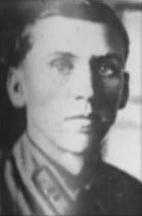
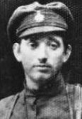

Кримінальна справа № 67/22
Слідство й суд 1919–1925 років: протоколи жандармерії й поліції, допити свідків, лікарняна книга, вироки. Близько шестисот аркушів, усі перекладено.
Дубровиця · 1905 — 1925 · справа № 67/22
Звідки в поліському містечку взялися більшовики, чому селяни пішли на маєток Плятерів і чим скінчилася ніч, коли загинули двадцять двоє людей, а двоє оборонців усупереч переказам вижили. Повстанці, ревком і суд — за польською кримінальною справою 1919–1925 років, книжкою Лева Степанова та спогадами з обох боків.
Увечері 21 листопада 1918 року загони селян із Дубровиці та навколишніх сіл оточили Воробин, фільварок графів Плятерів на північ від містечка. Брати Ігнацій та Антоній Плятери, їхній повірений, службовці маєтку й найнята варта оборонялися в будинку всю ніч і половину наступного дня; кулемет, на який вони розраховували, заклинило на початку бою. Коли будинок підпалили, оборонці склали зброю: їм пообіцяли арешт і суд. Їх вивели на вулицю й розстріляли, а маєток розграбували. Вижили з оборонців будинку лише двоє поранених стражників — Віктор Ліпінський і Дмитро Піскунов, — хоча досі прийнято писати, що загинули всі.
Для учасника повстання, який описав цей бій 1927 року, це була перемога над «гетьманським загоном». Польська жандармерія, що прийшла сюди 1919 року, назвала нападників «бандою» й почала арешти за доносами. Справа пройшла через три слідства: польових судів 1919 року, слідчого судді Родзевича 1920-го і слідчих суддів Сарненського повіту 1921–1922 років. Більшість ватажків до того часу загинули або пішли з Червоною армією, і 1923 року на лаві підсудних опинилися восьмеро чоловіків.
Сторінка має п'ять частин. Перша розповідає, звідки в Дубровиці взялися більшовики й чому восени 1918 року село пішло на маєток. Друга відтворює саму ніч за протоколами справи і показує, як ту саму ніч переказували радянські книжки. Третя — про кілька місяців «червоної Дубровиці», четверта — про слідство й суд, п'ята — про долі людей і джерела. Усі аркуші справи, близько шестисот знімків, перекладено, і скани відкриваються поруч із перекладом.
Слідство й суд 1919–1925 років: протоколи жандармерії й поліції, допити свідків, лікарняна книга, вироки. Близько шестисот аркушів, усі перекладено.
Лев Степанов, Львів, 1968. Найдокладніша радянська розповідь про повстання — за спогадами учасників і партійними архівами, з радянськими оцінками.
Перші газетні звістки 1918 року, спогади повстанців 1927 і 1958 років, ювілейні статті районної газети, спогади брата загиблих Плятерів.
Частина перша
до листопада 1918
…ліси рубають, влада не діє.
телеграма графині Броель-Плятер губернському комісарові, 1917 · цитата з книжки Л. Степанова
Щоб зрозуміти, що сталося у Воробині, треба знати одне: восени 1918 року в Дубровиці фактично не було держави. Понад сто років містечко жило в Російській імперії, потім за чотири роки влада змінилася більше десяти разів, а наприкінці на вісімнадцять років прийшла Польща. Натисніть на будь-який відрізок, щоб прочитати, що це була за влада.
Півтора століття одним рядком
Чотири роки під лупою: березень 1917 — березень 1921
Польсько-литовська держава. Дубровиця — приватне містечко: спершу князів, з 1770-х років — графів Плятерів.
Після другого поділу Польщі край відійшов до Росії. З 1796 року Дубровиця — у Рівненському повіті Волинської губернії. Маєток і ліси лишаються за Плятерами. 1915–1917 роки — прифронтова смуга, у маєтку штаб армії.
Царя скинуто. У Дубровиці з'являються ради й солдатські комітети, село починає брати панський ліс і землю. У Києві Центральна Рада домагається автономії України.
У Петрограді владу беруть більшовики. Дубровицьку волосну раду очолює більшовик Петро Шпаковський, і рада починає ділити поміщицьку землю.
УНР, проголошена в Києві Центральною Радою, воює з більшовиками. Кінний загін розганяє Дубровицьку раду, Шпаковського везуть до в'язниці в Рівному.
Більшовицькі частини беруть Рівне. 22 січня в Дубровиці збирається волосний з'їзд рад, у містечку діє червона гвардія.
За Берестейським миром УНР кличе на допомогу Німеччину й Австро-Угорщину. Німецькі війська займають Полісся, поміщики повертаються до маєтків.
Німці розганяють Центральну Раду й ставлять гетьманом Павла Скоропадського. Влада тримається на німецьких гарнізонах. Селян змушують повернути взяті землю, ліс і худобу.
Повстанці беруть Воробин і владу в Дубровиці. Директорія — новий уряд УНР, згодом на чолі з Петлюрою, — двічі забирає містечко, а повстанці разом із Червоною армією двічі його повертають.
7 березня Північна армія отамана Оскілка остаточно бере Дубровицю. Ревкомівців, які не встигли піти, вбивають.
Польське військо займає Полісся. Жандармерія проводить ексгумацію у Воробині й починає слідство, з документів якого складається ця сторінка.
Під час польсько-радянської війни Червона армія доходить до Варшави і на кілька тижнів займає Полісся. Слідство переривається, частина заарештованих зникає.
Ризький мир 1921 року залишає Західну Волинь Польщі. Дубровиця — містечко Сарненського повіту Волинського воєводства. 1923 року тут судять учасників нападу на Воробин, а колишні повстанці йдуть у підпілля.
Червона армія займає Західну Україну. Для Дубровиці починається радянська влада, а з нею — нова історія.
Межі відрізків приблизні: де джерела не дають дня, взято середину місяця. Дати 1917–1919 років — за книжкою Л. Степанова, справою № 67/22 і історією Дубровиці на цьому сайті.
Повстання не почалося в листопаді 1918 року. Люди, зброя й образи, які зійшлися того вечора біля Воробина, збиралися в Дубровиці півтора десятиліття. Найдокладніше цей шлях описав Лев Степанов у книжці «Безсмертя батьків» 1968 року. Книжка радянська, і мова в ній відповідна: «трудящі», «карателі», «буржуазні націоналісти». Звідси взято факти: імена, дати й події. Оцінки лишаються авторові. Де є інші джерела, їх названо поруч.
Ковалі Яків і Йосип Лясковці тримали в Дубровиці кузню, до якої сходилися селяни: відклепати косу, нагострити сокиру, посидіти. Сюди ж заходив швець Петро Шпаковський, син дубровицького жебрака Кіндрата. Юнаком він поїхав на заробітки до Одеси, 1905 року потрапив там на барикади, а після арешту й побоїв одеський губернатор вислав його додому під гласний нагляд поліції. Дружина Шпаковського тримала корчму, і дубровицькі машиністи привозили туди зі Здолбунова, Коростеня й Сарн газети та брошури.
1913 року з Сибіру повернувся старший син Якова, В'ячеслав. В Іркутську він служив у саперному батальйоні, після Ленського розстрілу його заарештували за агітацію й вигнали з армії. Разом із Миколою та Степаном Лясковцями, Будкевичами, Олександром Модеком, Олександром Конончуком і Федором Рабешком він збирав маївки в лісах над Горинню. Одну сходку поліція вистежила, і п'ятьох її учасників, побитих, відвезли до рівненської в'язниці.
У роки столипінської реформи неспокійно було й на селі. У Речиці селяни вбили на полі землеміра й урядника, і до Дубровицької волості стягнули козачі сотні.
Степанов, с. 7–10
Війна підійшла до Дубровиці впритул: передова пролягла по Стоходу й Стиру, і вночі було видно спалахи гарматних залпів. У маєтку Плятерів розмістився штаб армії Південно-Західного фронту, на станції Домбровиця працювали армійські технічні майстерні, у містечку засідав військовий трибунал. Пастух Микола Євчук запам'ятав, як козаки повезли до лісу солдата зі зв'язаними руками й повісили на суку. Містечко заповнили біженці й поранені, що поверталися з фронту.
Разом з армією прийшли люди, з якими Дубровиця 1918 року почне повстання. Серед них грузин Семен Майсурадзе, слюсар армійських майстерень: він одружився з дубровичанкою й лишився тут. Командир 48-го важкого артилерійського дивізіону капітан Євген Бабін заявив на засіданні армійської ради: Я присутній… і виступаю як більшовик
. Голова дивізіонного комітету Михайло Коковіхін возив із Петрограда літературу, і контррозвідка фронту доносила, що в дивізіоні близько половини солдатів записалися до більшовиків.
Степанов, с. 11–17; спогад М. Євчука
Після Лютневої революції в Дубровиці з'явилися солдатські комітети й Рада. У квітні Шпаковський, Модек, Грицюк та армійські партійці створили групу більшовиків. Наприкінці серпня, як згадував Степан Лясковець, волосний виконком складався вже переважно з них. Під час корніловського виступу армійський комітет у Дубровиці заарештував командувача Особливої армії генерала Ерделі.
Село тим часом узялося за землю. Селяни пасли худобу на панських луках, рубали ліс і виганяли орендарів із млинів. Графиня Броель-Плятер телеграфувала губернському комісарові Тимчасового уряду:
Безчинства в маєтку Дубровиця… тривають, хліб розкрадають, орендарів селяни виганяють з млинів, ліси рубають, влада не діє.
Війська, щоб послати до маєтку, в комісара не знайшлося. Восени Дубровицька рада почала ділити поміщицьку землю. У Колках земельний комітет очолив поранений фронтовик Пилип Борко-Бруяка, а в Сельці однорукий Трохим Камінський, якого обрали до волосної ради, ходив із бідняками ділити землю сажнем.
Степанов, с. 13–14, 19–24, 29–30
Влада в Україні розкололася: Центральна Рада й більшовики вже воювали між собою. Першою це відчула Дубровиця. Кінний загін Чарноцького, якого послав голова Рівненської повітової ради, розігнав волосну Раду, а побитого Шпаковського повіз до рівненської в'язниці. На Новий рік більшовицькі частини вибили гайдамаків із Рівного, і Шпаковського випустили.
22 січня 1918 року волосний з'їзд Рад знову обрав більшовиків, а в містечку з'явився червоногвардійський загін. Його ядро становили брати Лясковці, Олександр Саліванов, Олександр Кренько, Петро Бандура, П. Лосик, І. Перишко та І. Нашора. Через місяць за Берестейським миром прийшли німці. Уряд Центральної Ради кілька днів сидів у вагонах на станції Сарни, а червоногвардійці й радянські активісти пішли з Дубровиці на схід.
Степанов, с. 32–38
Слідом за німецькими ешелонами повернулися поміщики й управителі, і те, що село взяло 1917 року, тепер вимагали назад: ліс, з якого постраждалі від війни поставили собі хати, худобу, збіжжя. Степанов пише, що на села накладали контрибуції для покриття графських збитків
, суму яких граф визначав сам. Землю, яку селяни восени 1917 року зорали й засіяли, повернули родині Плятерів, а за випас на графських луках брали штрафи.
Порядок у маєтках тримали кінні загони. Радянські тексти пам'ятають їх як «карателів», польські свідки 1920 року — як найнятих вартових. Степанов пише, що у Воробині селян тримали в льохах по груди у воді, а управитель застрелив бідняка Миколу Романушка, і похорон Романушка став першою демонстрацією проти гетьманської влади. Польські документи цієї історії не знають. Проте й вони визнають, що стосунки маєтку з селом були вельми недобрими
, а повірений — дуже суворим до селян
. Фельдшер Пальонка уточнив: а саме — бив
.
У Сельці гайдамаки шукали Трохима Камінського. Не знайшовши, били нагаями його батьків, а хату спалили. Камінський сховався в лісі й зібрав загін на двісті чоловік, з одним кулеметом.
Степанов, с. 38–45; Мацкевич, 6.IX.1922, арк. 401; Пальонка, 1920
Навесні підпілля склало комітети в Орв'яниці, Сельці, Мочулищі, Круповому, Бересті, Колках та інших селях. Знайомих людей влаштували вартовими на військові склади, що лишилися в Дубровиці від царської армії, і звідти потроху виносили зброю. На початку червня склади загорілися. Протягом багатьох годин… в небі, затягнутому чорними клубами диму, блискавками миготіли спалахи розривів
, — згадував Модек. Степанов приписує підпал підпільникам.
Степанов пише, що 20 липня в хаті коваля Йосипа Лясковця зібралися вісімнадцять делегатів. Григорій Лясковець, Григорій Лебеда й Андрій Правник вимагали піднімати повстання негайно: на Сарненському вузлі саме страйкували залізничники. Микола Лясковець відповів, що загони малі, патронів немає, навколо німецькі гарнізони з артилерією, а до радянського кордону п'ятсот верст: Це авантюризм, а не революційна боротьба
. Більшість проголосувала чекати. Господиня, Ольга Лясковець, помітила біля хати відомого провокатора, і делегати встигли розійтися.
Наступного дня почалися обшуки. Модека й Григорія Лясковця заарештували й повезли до Лунінця, звідки вони втекли підкопом. Цей епізод має відлуння і в польській справі: того ж серпня начальник міліції Мацкевич доповів слідчому Бердникову про змову на чолі з головним організатором… Миколою Лясковцем
.
Степанов, с. 41–50; Бердников, 20.V.1920, арк. 563
Восени дубровицьке підпілля зв'язалося з Рівненським і Волинським комітетами більшовиків, і з Москви через фронт приїхав рівнянин Микола Єфімов (Заграничний). Але вирішило все інше: у листопаді розвалилася Німецька імперія. Солдати дубровицького гарнізону заарештували своїх офіцерів і зібралися додому — 15 листопада про це з тривогою телеграфував волинський губернський староста. Того ж тижня Директорія підняла повстання проти гетьмана, і відозву Петлюри й Винниченка отримали навіть у Дубровиці.
Гетьманська влада на Поліссі трималася тепер на кількох вартах і на німцях, які воювати вже не збиралися. Людям, що півтора десятиліття сходилися в кузні Лясковців, лишалося тільки вийти з підпілля.
Степанов, с. 50–61; телеграма № 410; Бердников, 1919, арк. 484
У радянських авторів пояснення просте: бідняки під проводом більшовиків піднялися проти панів. У польського слідства теж просте: банда грабувала й убивала. Кожне з них пояснює лише половину того, що сталося. Якщо скласти докупи книгу, спогади й справу, видно щонайменше п'ять сил, які зійшлися в одному місці на одному тижні.
Дубровиця й навколишні села межували з землями й лісами Плятерів. 1917 року селяни взяли ліс, луки й поле, 1918-го мусили все повернути й заплатити штрафи. Ворожнеча вийшла особистою: у Воробині був конкретний повірений, у селах — конкретні контрибуції й хати, поставлені з «графського» лісу.
Три роки Дубровиця жила в прифронтовій смузі: штаб армії в маєтку, майстерні на станції, тисячі солдатів і агітаторів. Війна лишила по собі фронтовиків, які вміли стріляти, і склади зброї російської армії в Дубровиці й Видіборі, що нікому вже не належали.
Ядро було невелике, зате згуртоване: родина ковалів Лясковців, Шпаковський, фронтовики, машиністи, що возили людей і літературу. Вони пережили арешти 1918 року, мали зв'язок із Рівним і Москвою — і, на відміну від «лівих», уміли чекати.
У листопаді 1918 року гетьманська влада трималася на німецьких багнетах, а німці збиралися додому. Директорія сама закликала повставати проти гетьмана. На кілька тижнів владою ставав той, хто мав зброю й організацію.
у переломний момент… коли Гетьманський уряд був повалений(обвинувальний акт)
Радянські тексти пишуть, що люди мстилися за побої, за сидіння в холодних льохах маєтку і за селянина Миколу Романушка, якого, за їхніми словами, застрелив управитель. Польські документи — що грабували й зводили рахунки. Для натовпу, який кричав Де гайдамаки?!
, вартові маєтку були тією самою гетьманською силою, що 1918 року забирала в сіл ліс і худобу.
виключно як великих землевласників(Бердников); помста (Пальонка)
Жодна з цих причин не пояснює, чому полонених, яким пообіцяли суд, розстріляли просто біля палацу. Це рішення ухвалили люди, що стояли там 22 листопада, і про нього наступна частина.
Частина друга
21 — 22 листопада 1918
Тоді Олександр Конончук поставив це питання на голосування.
Аркадій Сибіковський, допит 7 вересня 1922 року
Хроніку складено за протоколами слідства 1919–1922 років, показаннями на суді й висновками суду. Час подано так, як його називали свідки; де їхні слова розходяться, це зазначено.
Начальник міліції в Дубровиці Пилип Мацкевич: стосунки маєтку з селянами були вельми недобрими
від самої революції; селяни розтягали майно маєтків, адміністрація відповідала репресіями. У серпні його дізнання про те, що в Дубровицькій ґміні готується повстання на чолі з головним організатором… Миколою Лясковцем
, лягло на стіл судового слідчого Павла Бердникова, і той переслав його прокуророві в Луцьк. Улітку брати Ігнацій та Антоній повернулися до Воробина.
Мацкевич, 6.IX.1922, арк. 401–402; Бердников, 20.V.1920, арк. 563; спогади Вітольда Плятера
Ходять чутки, що селяни нападуть на Воробин. Управління маєтку щоночі виставляє посилену варту, графи наймають десятьох вартових — варта з 16 чоловік під командою Кальтенберга з Рівного — і тримають напоготові кулемет.
Буйновський, Галушкевич, Свириденко, Лятта, 29–30.V.1920, арк. 573 зв.–583; Ліпінський, 6.IX.1922, арк. 395
Волинський губернський староста телеграфує до Державної варти: у Домбровиці німецькі солдати заарештували своїх офіцерів і збираються додому.
Підпільний комітет на трьох засіданнях вирішує виступати 21 листопада, обирає революційний комітет і трьох командирів для наступу на Воробин. Німецька солдатська рада, за словами автора спогаду, допомагає повстанцям гвинтівками, набоями й бомбами.
До стражника Віктора Ліпінського приходить мати Івана Дем'янця з Берестя: син розповів їй про напад, що готується, і просить, щоб Ліпінський виїхав і щоб попередили Плятерів. Надвечір воробинські жінки, серед них покоївка Плятерів, приносять із Дубровиці вимогу: щоби всі ми негайно здали зброю, інакше всіх перестріляють
.
Ліпінський: протокол суду, арк. 118 зв.; допит 6.IX.1922, арк. 395
Аркадій Сибіковський бачить у Дубровиці натовпи людей, які гаряче щось обговорювали
: хочуть роззброїти поліцію й іти на Воробин. За спогадом учасника повстання Ф. Пирішка, о 10-й вечора повстанці захопили державну варту в містечку. Лісові об'їждчики, що ночують у лісничівці Вев'юровського, чують постріли й бачать натовп озброєних селян, який іде в бік Воробина.
Сибіковський, 7.IX.1922, арк. 397 зв.; Шевчук, Кулінський, Попович, Тєлєжко, 30.V.1920, арк. 576–584; «Червоний прапор», 1958
Починається облога. Численні натовпи селян із навколишніх сіл, озброєних карабінами, револьверами та гранатами, оточили фільварок
. Варта трубить на сполох, оборонці займають позиції.
Обвинувальний акт, арк. 3; Калінський на суді, арк. 119; Ліпінський — за апеляційним вироком, арк. 225 зв.
Інші свідки називають близько 23:00 (Буйновський, 1920); близько півночі (Свириденко, 1920; Калінський, 1922), 1–2-гу (Мольський, 1922) або близько 2-ї (Свириденко на суді). Сам Ліпінський 1922 року сказав: варта помітила селян приблизно о 10-й годині
; у тому ж протоколі його поранено уночі, ще до 12-ї
, тож ідеться про 10-ту вечора. За спогадами учасників, загони рушили з Дубровиці опівночі.
Селяни стріляють і кидають гранати. Кулемет оборонців на превелике нещастя
заклинює. Поранено стражника Дмитра Піскунова й ветеринара Росіна. У Воробині стоїть полк німецької артилерії, і його пости з боку саду пропустили селян крізь свої ряди
. За двадцять хвилин оборонці відступають до двоповерхової кам'яниці. Ще до півночі поранено в ногу самого Ліпінського.
Ліпінський, 6.IX.1922, арк. 395 зв.–396; Лятта, 30.V.1920, арк. 573 зв.; Галушкевич, арк. 580 зв.
Гурти нападників обшукують помешкання службовців. До садівника Якова Галушкевича вдираються п'ятнадцятеро нападників (так кажуть і Радванський, і сам Галушкевич) з криками Бий, грабуй, дери гайдамаків!
і Де гайдамаки?!
Мечислава Радванського, якого взяли за вартового, виволікають на подвір'я, але відпускає незнайомий бандит із червоною кокардою
— пізніше Радванський дізнався, що це був Михайло Конончук.
Радванський і Галушкевич, 29–30.V.1920, арк. 569, 580
До лікарні в Дубровиці везуть поранених селян, по одному чи по двоє, на підводі, яку повстанці заздалегідь виділили для поранених. У книзі хворих їх запишуть 22 листопада, без години. За висновком суду, серед них Теодор Перішко, Іван Дем'янець і Онуфрій Харківець.
Фельдшери Микола Пальонка й Андрій Калінський, 1920 і 1922; книга хворих
За механіком Олександром Свириденком, до його помешкання у Воробині приходять озброєні чоловіки, серед них Іван Москальчук-Нашора, і вимагають карабін; Нашора ставить його під стіну разом із людьми, витягнутими з хат, щоб розстріляти, але підійшов Конончук і оборонив мене
.
Свириденко, допит 27.VIII.1922, арк. 375; на суді, арк. 119
Так Свириденко розповідав 1922–1923 року. 1920-го він казав лише, що частина «банди» прийшла до нього по коней і пішла до Воробина, і не згадував у цьому зв'язку Нашору.
До села Острівок прискакує вершник і скликає людей: Воробин оточений, Плятери захищаються зі зброєю й убили кількох
. Лук'ян і Хома Гончарі беруть карабіни й біжать до Воробина; Лук'ян умовляє сусіда Антона Голяка йти з ними боронити свободу
.
Голяк і Лятта, 30.V.1920, арк. 571–573
Будинок підпалено, він горить зсередини. Оборонці, двадцять з гаком чоловік
, відстрілюються з правого крила, потім через горище переходять до лівого. До дубровицької аптеки вривається озброєний чоловік і вимагає два пуди бензину: Бензин потрібен, щоби підпалити палац Плятерів, бо вони зачинилися всередині і захищаються зі зброєю!
Аптекарка Більчинська відповіла, що стільки пального в неї немає.
Ліпінський, арк. 395 зв.–396; Ядвіга Більчинська, 29.V.1920, арк. 566 зв.–567 (вона датує це 23 листопада)
До фільварку Мочулище приходить загін із сорока озброєних на чолі з Ісааком Петрушком. Петрушко питає управителя Зигмунта Мольського, чи він належить до партії народу, чи стоїть за панів
, забирає в нього карабін і револьвер і веде з собою на Воробин. За Мольського заступається Михайло Мороз, візник Плятерів, і його лишають стерегти дорогу, чи не йдуть війська на допомогу Плятерам
. Частина загону йде на Воробин.
Мольський, 29.V.1920 і 30.VIII.1922, арк. 565, 374; староста Гваздюк, 30.V.1920, арк. 571 зв.–572
Мольський 1920 року датує це 23 листопада близько 10-ї ранку, 1922 року — днем нападу.
Капітуляція. Вичерпавши набої, оборонці складають зброю й виходять: селяни пообіцяли, що їх лише заарештують і що буде суд
. Селяни кидаються на них із багнетами, але один із ватажків, здається, більшовик
, зупиняє їх. Натовп радиться, що з полоненими робити, і Олександр Конончук поставив це питання на голосування
.
Буйновський, 30.V.1920, арк. 579 зв.; Ліпінський, арк. 396; Сибіковський, арк. 398
Графів Плятерів і решту полонених виводять на вулицю й розстрілюють, а тіла грабують. Повіреного Пшедримирського вбивають раніше, коли він намагається втекти; Сибіковський бачив його тіло під кущем. Близько двадцяти нападників вриваються до кімнати з пораненими й викидають їх на подвір'я. Гаврило Курач, на прізвисько «Заєць», тягне за ноги вмираючого Росіна.
Ліпінський, арк. 396–397; Сибіковський, арк. 398; апеляційний вирок, арк. 225 зв.–226
Прокіп Мітлюх, якого змусили закопувати тіла, 1919 року казав інакше: Спочатку розстріляли службовців, а графів відвели вбік на дорогу і там окремо
. Час розстрілу: близько 15:00 за Мольським, Калінським, Свириденком і Литвинчуком; близько 17:00 за Ліпінським.
Ліпінського й Піскунова три-чотири години б'ють прикладами й ціляться в них із карабінів. Ліпінського рятує селянин, який просить віддати його під «революційний трибунал»; пораненого кладуть на воза під два трупи — лісового контролера Вев'юровського й іншого, якого Ліпінський не впізнав, хоч той був «з нашого товариства». Свириденко за дві години бачить 21 тіло, що лежали рядком.
Ліпінський, арк. 396 зв.; Свириденко, арк. 375
Михайло Литвинчук зустрічає п'яного Нашору, що йде з Воробина з карабіном і револьвером, а за ним везуть бочку горілки. Увечері до лікарні привозять поранених стражників і тіло лісничого Угринського.
Литвинчук, арк. 376 зв.; Пальонка й Калінський, 1922
Єремія Шеремета повертається до Мочулища й каже Морозу: Плятерів та їхніх урядовців ми вже повбивали!
Через пів години верхи приїжджає Кирило Мозоль і вигукує, що він є комендантом нападу на Воробин і що всіх воробинських псів уже винищено
. Загін хоче вбити Мольського, але місцеві селяни заступаються за нього; той тікає до Дубровиці.
Мольський, 29.V.1920, арк. 565 зв.; Мольський-молодший, арк. 568; протокол суду, арк. 118 зв.
1923 року на суді Мольський переказав слова Шеремети інакше: Іди забирай своїх вихованців, лежать уже побиті, як пси
.
За свідченнями 1920 року, Іван Москальчук-Нашора хвалився Радванському й механіку Свириденкові, що застрелив Пшедримирського в ту саму мить, коли Пшедримирському вдалося вбити на місці одного з нападників
. Мольський-молодший тоді ж сказав, що чув це сам, але 1922 року визнав: знає лише з їхніх слів. Лук'ян Гончар приносить дружині дорогі штани, піджак і чоботи; на її запитання каже, що взяв їх у Воробині. Яків Пальонка збирає у Воробині розкидані речі, зокрема шапки вбитих графів.
Мольський-молодший і Радванський, 29.V.1920, арк. 568–569; Свириденко, 30.V.1920, арк. 583 зв.; Мольський-молодший, 30.VIII.1922, арк. 374 зв.; Уляна Гончар, арк. 572 зв.; протокол жандармерії 26.IX.1919, арк. 440 зв.
«Київська Думка» (№ 225): Графи Плятер, рятуючись від вогню, вискочили з приміщення і були вбиті натовпом. Убито так само 8 чоловік варти
.
За презентацією про С. Й. Лясковця
У Дубровиці діють ревком і ревтрибунал. З Володимирця привозять слідчого Полторацького й близько двадцяти поміщиків, службовців і євреїв; усіх розстрілюють за вироком революційного трибуналу
. Уночі забирають аптекаря Більчинського; улітку 1919 року його тіло випливе біля водяного млина.
Бердников, 1919–1920, арк. 484–489, 563–564; ревком і трибунал
Польське військо доходить до Мочулища в травні 1919 року. Жандармерія заарештовує Шеремету, і 19 листопада його передають польовому судові 4-ї дивізії піхоти, але він утікає зі шпиталю в Сарнах. За поліцією 1921 року, суд засудив його до розстрілу, Мольський свідчив проти нього, а втік він дорогою до Ковеля.
Мольський, 12.II.1920, арк. 537 зв.; польовий суд, 9.III.1920, арк. 514 зв.; поліція, 20.VIII.1921, арк. 323–324
Польська військова влада проводить ексгумацію. Прокіп Мітлюх показує, де лежать графи, де службовці, а де гетьманські вартові
. Мольський розпізнає Плятерів за позначками на білизні, шпильками з діамантами під краватками й золотими медальйонами. Усі вбиті кулями; в Ігнація зламана ліва рука, вибиті зуби й відрізаний палець, в Антонія зламані обидві руки й ліва нога. Загиблих перепоховали на дубровицькому кладовищі.
Протокол жандармерії 26.IX.1919, арк. 440; Мольський, 29.V.1920, арк. 566, і 30.VIII.1922, арк. 374 зв.; сторінка Плятерів
Схему надрукували разом зі спогадом анонімного «учасника повстання». За ним, до 10-ї години 21 листопада в Дубровиці зібралися загони близько 350 осіб. Сто залишили охороняти містечко, решту звели в три загони, а четвертий чекав на північ від маєтку сигналу ракетою.
За справою, крім Дубровиці, — Мочулище, Орв'яниця, Берестя, Сельці, Острівок, Колки й Крупове. Інформатор жандармерії 1920 року казав, що вся озброєна банда вирушила на Воробин через села Кривицю та Литвицю
. Мочулище — фільварок за 4 кілометри від Воробина, де жив управитель Мольський і куди в день нападу прийшов загін Ісаака Петрушка.
Імена й посади подано за свідченням Юзефа Вев'юровського 1920 року й обвинувальним актом 1922-го. Написання прізвищ у документах справи різниться; тут вони зведені до одного.
І десять фільваркових стражниківчиїх прізвищ слідство так і не встановило; варту з 16 чоловік очолював Кальтенберг із Рівного
Що змінює ця справа
Досі в переказах і публікаціях пишуть, що всі, хто оборонявся у Воробині, загинули разом із Плятерами. Справа каже інакше: з будинку, де трималася оборона, живими вийшли двоє поранених стражників — Віктор Ліпінський і Дмитро Піскунов. Їхні імена незалежно одне від одного записані в чотирьох документах: у списку лікаря Добровольського, у допитах обох фельдшерів 1920 року, в обвинувальному акті 1922 року й у допиті самого Ліпінського.
З усіх осіб, що оборонялися в домі, вціліли тільки двоє — я і Піскунов.
син Генрика · нар. бл. 1885 · стражник у варті Плятерів
стражник («гайдамака», за фельдшерами) · ім'я — з лікарняних документів
одужали й виїхали, але куди — мені невідомо.
теперішньої його адреси не знаю, і імені його не пам'ятаю.
Обвинувальний акт 1922 року окремим пунктом закидав підсудним замах на вбивство Ліпінського й Піскунова, які завдяки вжитим лікувальним заходам врятували своє життя
; суд нікого в цьому винним не визнав. Поза будинком уціліли й інші люди з варти та двору: Мечислав Радванський, якого призначили до охорони, відпустив «бандит із червоною кокардою»; вартового Станіслава Буйновського від оборонців відрізала річка; за механіка Свириденка вступився Конончук.
Землевласник із Лучиць Луцького повіту. Його вдова Марія їздила до Воробина, коли дізналася про вбивство. Восени 1919 року син, інженер Євген Вахштейнський, просив розшукати вбивць і називав свідків. Картка жандармерії 1920 року приписує смерть касира ревтрибуналові.
Заява 28.IX.1919, арк. 478–479; Крестовський, 10.III.1920, арк. 507; картка 12.II.1920, арк. 476
Висновок експерта: усім убитим було завдано ран безумовно смертельних
. Ігнація та Антонія після ексгумації 1919 року поховали на дубровицькому кладовищі, поруч із родинною каплицею. Фельдшери 1922 року згадують також тіло лісничого Угринського, якого немає в обвинувальному акті.
Д-р Весельський, арк. 120; Плятери на Дубровиці
30 травня 1920 року слідчий суддя Родзевич оглянув у Дубровиці книгу хворих повітової лікарні: на сторінках 32–37 записано дванадцять чоловіків, привезених 22 листопада з вогнепальними ранами. Районний лікар Добровольський додав реєстр із діагнозами й датами виписки. За цими записами слідство шукало обвинувачених — і через них же заарештовувало однофамільців.
| Запис | Поранений | Рана | Дніву лікарні | Що з ним сталося |
|---|---|---|---|---|
| № 119 | Федір Рабешкосин Павла · Дубровиця | права гомілка, перелом | 50 | розшук казав: хотів побачити кров Плятерів, але побачив свою; 1920 переховувався, 1921 поліція писала, що помер |
| № 120 | Олександр Правниксин Томаша, 29 · Орв'яниця | праве стегно | 101 | розшук за поліцією 1921 — пішов до війська й не повернувся |
| № 121 | Сергій Будкевичсин Терентія, 23 · Орв'яниця | ліва гомілка | 15 | розшук 1921 повернувся хворим на тиф; до суду не дійшло |
| № 123 | Марко Дем'янецьсин Аверкія, 26 · Берестя | праве стегно, перелом; у реєстрі — ліве | 62 | розшук ґміна 1920: «удома присутній»; до суду не дійшло |
| № 124 | Мойсей Цегельниксин Кузьми, 25 · Дубровиця | праве передпліччя | 17 | розшук бургомістр: у Дубровиці такого не знають |
| № 125 | Онуфрій Харківецьсин Івана, 17 · Колки | шия й праве плече | 36 | засуджений 10 р., в апеляції виправданий |
| № 126 | Федір Будкевичсин Терентія, 40 · Орв'яниця | права гомілка, перелом; у реєстрі — ліва | 101 | розшук поліція 1921: з 1914 у війську, додому не повертався |
| № 127 | Григорій Конончуксин Максима, 21 · Дубровиця | праве стегно, перелом | 101 | розшук 1918 пішов до більшовицького війська |
| № 128 | Іван Дем'янецьсин Григорія, 19 · Берестя | ліве передпліччя, перелом | 98 | засуджений 10 р., в апеляції виправданий |
| № 129 | Марко Велінецьсин Яна, 28 · Сельці | голова, перелом черепа | 48 | розшук не знайдений; двічі заарештовували однофамільця Марка, сина Якова |
| № 130 | Теодор Перішкосин Бориса, 21 · Дубровиця; у книзі — Федір | права гомілка, перелом | 101 | засуджений 10 р., в апеляції виправданий |
| № 131 | Василь Конончуксин Василя, 33 · Дубровиця | праве стегно і мізинець правої руки | 64 | загинув «комендант нападу»; за поліцією, забитий петлюрівцями 1919 |
| реєстр | Дмитро Піскуноввартовий маєтку | обидві гомілки | 73 | оборонець після одужання виїхав |
| реєстр | Віктор Ліпінськийстражник маєтку | розтягнення стопи з крововиливом | 66 | оборонець головний свідок-очевидець 1922–1923 |
Протокол огляду книги хворих, 30.V.1920, арк. 585; реєстр районного лікаря Добровольського, 3.VI.1920, арк. 598–599. Таблицю звірено зі сканами оригіналів; у реєстрі лікаря по батькові дописано олівцем, а місце рани подекуди відрізняється від книги.
Про Воробин майже пів століття писали двічі, і ці дві розповіді не перетинались. Для радянських авторів це був перший бій червоної Дубровиці
— штурм замку, де засіли гайдамаки-карателі
. Для польського слідства — напад банди
, після якого двадцять двох людей розстріляли на дорозі. Нижче обидві розповіді поставлено поруч, крок за кроком: що каже кожна сторона, де вони несподівано збігаються і де одна з них мовчить.
Усі польські документи, перша газетна звістка («Київська Думка» вже 27 листопада) і навіть спогади 1927 та 1958 років називають ніч з 21 на 22 листопада 1918 року. З кінця 1960-х радянські тексти пишуть 4 грудня, Степанов — ніч на 5 грудня. Різниця рівно тринадцять днів — стільки, скільки між старим і новим стилем.
Як вона могла з'явитися, показує районна газета 1967 року: уривок польського обвинувального акту там надруковано під заголовком 21 листопада 1918 р. (за старим стилем)
. Але польський суд і гетьманська Україна з весни 1918 року вже жили за новим стилем — дату «перевели» вдруге. Якщо відняти ці 13 днів, ранні дати Степанова лягають на справу: конференція 3–4 грудня — це 20–21 листопада (як у спогаді 1927 року), похорон 7 грудня — 24 листопада, похід на Сарни 8 грудня — 25 листопада.
У Воробині стоїть один з таких каральних загонів
гетьманців: селян прив'язують до сідел і женуть за вершником, кидають у графські льохи
з крижаною водою. Управитель Пшедримирський (у Степанова — Пшежемирський) без попередження стріляв у селян
, які ступали на графське поле, — саме так забив він бідняка Миколу Романушка
. Дубровицькі підпільники Сидір Лебеда й Мусій Кузьмич пропонують убити графа із засідки, але комітет забороняє терор.
Начальник міліції Мацкевич: від самої революції стосунки маєтку з селянами були вельми недобрими
, селяни розтягали майно, адміністрація відповідала репресіями. Обвинувальний акт: селяни самовільно забирали інвентар з маєтку Плятерів
. Свідки 1920 року кажуть про повіреного Пшедримирського, що він був дуже суворий до селян
. Охорону маєтку становлять наймані вартові — 16 чоловік під командою Кальтенберга з Рівного.
ЧастковоВорожнечу між маєтком і селом визнають обидві сторони, і обидві виділяють жорсткого повіреного. «Каральний загін» у справі — найнята варта; убивства Романушка польські документи не згадують.
Друга підпільна конференція збирається в хаті коваля Йосипа Лясковця — зовні це гулянка з випивкою й іконами на стінах. Потім делегати переходять до хати Григорія Нашори, де мати ставить на стіл варену картоплю. Обирають ревком: голова — Степан Лясковець, військовий комісар — Микола Лясковець; ревтрибунал очолює Семен Майсурадзе. У сусідній кімнаті перекладач-латиш Арвід Скуїн домовляється зі спартаківцями
німецького гарнізону.
Ще в серпні 1918 року міліція доповідає слідчому про змову на чолі з головним організатором… Миколою Лясковцем
. Колишній слідчий Бердников, який сам ходив до ревкому, називає Миколу головнокомандувачем збройної сили проти Рівного
, військовим комісаром — Олександра Садовського, головою трибуналу — Антона Садовського; Майсурадзе — прокурор, що за кілька днів утік із чужими грошима. Степанові Лясковцю було тоді 19, і він сам писав, що був хлопцем 17 років
.
ЧастковоГоловний ватажок в обох — Микола Лясковець. А от Олександр Садовський, якого справа називає воєнкомом і командиром розстрілу, у книзі Степанова в повстанні взагалі не згаданий.
Дев'ять великих загонів, понад 1600 повстанців
: колківський — 300, орв'яницький — 200, берестецький — 250, селецький і бережківський — по 150. У передмові тієї ж книжки — більш як 10 тисяч поліщуків
. Проти них, за спогадами 1967 року, — близько 180
гайдамаків; за «Красной звездой» 1927 року — 60 офіцерів плюс 15 осіб озброєної прислуги
.
Численні натовпи селян
з навколишніх сіл; з чуток — від тисячі до кількох тисяч. Загін, що пройшов через Мочулище, — близько сорока людей. У будинку — брати Плятери, повірений, службовці й варта: за Ліпінським, двадцять з гаком
чоловік і один кулемет, який заклинило на початку бою.
РозходитьсяНападників у справі — тисячі, і радянські цифри цього не заперечують. А от оборонців радянські тексти збільшують у вісім-дев'ять разів і перетворюють найманих вартових на офіцерський загін.
Три зведені групи: В'ячеслав Лясковець іде шляхом з Дубровиці, Олександр Конончук — лівим флангом до Чорної брами
, Федір Рабешко — правим; з тилу, з-за Горині, б'є колківський загін Пилипа Борка-Бруяки. Гайдамаки строчать з кулеметів у глибокому рові
, потім тікають за товсті кам'яні мури
замку, уцілілого ще з середньовіччя
. Жорстокий бій тривав усю ніч
.
Близько 22:00 21 листопада фільварок оточують. Селяни стріляють і кидають гранати; кулемет оборонців заклинює. Протягом двадцяти хвилин оборонці відходять до двоповерхової кам'яниці й тримаються там усю ніч. Опівночі нападники обшукують помешкання службовців з криками Бий, грабуй, дери гайдамаків!
ЗбігаєтьсяНічний наступ із кількох боків, відступ оборонців у кам'яний будинок, бій до наступного дня — і в справі, і в радянських текстах. «Середньовічний замок» з ровом, брамами й бійницями — прикраса: у справі це двоповерховий кам'яний будинок із крилами.
Голова солдатської ради Кунчке обіцяє: солдати не підуть на повстанців, хоча і був такий наказ офіцерів
; спартаківці передають бомби, патрони, револьвери. Під час бою реакційні німецькі офіцери
намагаються підняти солдатів, розквартированих у самому Воробині, — ті відмовляються. Спартаківці навіть думали вдарити з гармат, що стояли біля костелу.
Ліпінський: у Воробині стояв полк німецької артилерії, і його пости з боку саду пропустили селян крізь свої ряди
. Шеремета в поліції 1921 року: карабіни видавали організатори, які дістали такі від німців
. 15 листопада губернський староста телеграфує: у Домбровиці німецькі солдати заарештували своїх офіцерів.
ЗбігаєтьсяНайнесподіваніший збіг: обидві сторони кажуть, що німецький гарнізон у Воробині не захистив маєток і що зброя повстанців частково німецька. Розходяться лише в тому, чи це була революційна солідарність, чи небажання воювати.
Коли стемніло
, повстанці підкочують до замку великі вози соломи й підпалюють під вікнами; загорілася суха, натерта воском підлога
(Степанов). У спогадах 1967 року — обклали будинок соломою та горючим матеріалом
, дим заповнив блокгауз
. Охрім Хомич з Колок пам'ятав, що це сталося зі сходом сонця
. «Красная звезда» 1927 року: хотіли підірвати піроксиліном, але гонець запізнився, тож вдалися до гасу
.
Близько 10:30 будинок горить зсередини; оборонці переходять із правого крила через горище до лівого. Тоді ж до дубровицької аптеки вривається озброєний чоловік і вимагає два пуди бензину: Бензин потрібен, щоби підпалити палац Плятерів, бо вони зачинилися всередині і захищаються зі зброєю!
За обвинувальним актом, оборонці здалися після підпалу палацу
.
ЧастковоПідпал — спільне місце всіх розповідей, і саме він вирішив справу. Час розходиться: ранок, «зі сходом сонця» чи «коли стемніло». Бензин, солома чи гас — три різні пам'яті про один вогонь.
Першим з охопленого полум'ям замка вискочив на сніг графський управитель, ненависний селянам садист і кат Пшежемирський. Його тут же ударом штика повалили на землю.
У нарисі 1967 року першими виходять з піднятими руками брати Антон і Гнат Плятери
.
Ліпінський: Пшедримирського застрелили на бігу, коли той намагався втекти, хто — не розгледів. Сибіковський бачив його тіло під кущем ще до розстрілу графів. Іван Москальчук-Нашора, за свідками, хвалився, що застрелив повіреного саме тоді, коли той убив одного з нападників. Суди визнали вбивцею Нашору.
Ліпінський, арк. 396; Сибіковський, арк. 398; Радванський, Свириденко, 1920РозходитьсяПовірений загинув окремо від інших і першим — у цьому джерела згодні. Але Іван Москальчук-Нашора, за це засуджений і померлий у в'язниці, у радянських текстах не існує зовсім: її Нашора — Гнат, продовольчий комісар ревкому.
Ревком хотів віддати полонених під суд трибуналу в Дубровиці
. Коли їх вивели за Чорну браму, повз тіла вбитих повстанців, натовп закричав: Розстріляти всіх собак!
Олександр Конончук вискочив наперед: Товариші, спокійно!.. Ми будемо їх судити іменем революції!..
— але його голос заглушили постріли
. Більшість інших радянських текстів про розстріл мовчить: під кінець дня перемогою над ворогом закінчилась і ця операція
.
Оборонці складають зброю, бо їм пообіцяли, що їх лише заарештують і що буде суд
. Селяни кидаються на них з багнетами, але один із ватажків, здається, більшовик
, зупиняє. Натовп радиться, і Олександр Конончук поставив це питання на голосування
. Полонених виводять на вулицю й розстрілюють; тіла грабують. Вітольд Плятер, брат загиблих, 1959 року писав: обложеним пообіцяли, що їх відпустять, а 22 чоловіків розстріляли на дорозі до Дубровиці. Двоє поранених вартових, Ліпінський і Піскунов, виживають.
Збігається — і саме тут найцікавішеОбидві розповіді ставлять у центр одну людину й один жест: Олександр Конончук зупиняє натовп і говорить про суд. За справою, після цього він ставить долю полонених на голосування. За книгою, постріли лунають усупереч йому. Обіцяний суд згадують обидві сторони — і в обох його не було.
Загинули С. Адамчук, І. Мартинчук, І. Коржик, В. Слобода та інші
(Степанов); Стефан Мартинчук, Іван Адамчук і двоє братів Слобеди (Пирішко, 1958); двоє — Мартинчук та Адамчук (1967). Поранених — 17. В перший день боїв у лікарню доставили з-під Воробино 15 поранених
(1968). 1985 року газета називає їх поіменно: Федір Рабешко, Василь Конончук, Григорій Конончук, а також Марко Дем'янець з Берестя, Онуфрій Харковець з Колок, Марко Веленець із Сельця
.
У книзі хворих Дубровицької лікарні за 22 листопада 1918 року — дванадцять чоловіків із вогнепальними ранами: серед них Федір Рабешко, Василь і Григорій Конончуки, Марко й Іван Дем'янці з Берестя, Онуфрій Харківець з Колок, Марко Велінець із Сельця, Федір Перішко. Троє вбитих нападників поховані на цвинтарі (Радванський). За цим списком 1920 року жандармерія й почала арешти.
протокол огляду книги хворих, 30.V.1920, арк. 585; Радванський, 1920Збігається поіменноРадянська газета 1985 року як героїв штурму перелічує тих самих людей, яких польське слідство знайшло в лікарняній книзі й посадило на лаву підсудних. Харківця й Дем'янця апеляційний суд 1923 року виправдав: крім самого факту поранення
, вини їхньої не довели. Для радянських авторів саме це поранення й було доказом участі.
Перемога повсталої Дубровиці була повною
; поранених доглядають санітарки Катерина й Ганна Конончук, Марія Кузло, Ірина Пирішко, Олександра Царик; населення несе полотно на бинти. Проголошено Дубровицьку Радянську Республіку
. «Карателів», захоплених під Володимирцем, пішим строєм погнали в Дубровицю
, і трибунал багатьом з них виніс смертний вирок
. 1919 року у Воробині — перша на Західній Україні сільськогосподарська комуна
.
Маєток повністю пограбований
; Лук'ян Гончар приносить дружині дорогий одяг із Воробина, Яків Пальонка збирає там шапки вбитих графів. Ревтрибунал розстрілює слідчого Полторацького, привезеного з Володимирця, і близько двадцяти поміщиків, службовців і євреїв; уночі забирають аптекаря Більчинського. Тіла з Воробина перепоховують лише після ексгумації у вересні 1919 року. Протокол земельного відділу Рівненського повітревкому 11 липня 1919 року відводить Воробин під радянське господарство.
ЧастковоСтрати Володимирця обидві сторони, найпевніше, описують ту саму подію — тільки одна каже «каральні загони», а друга називає імена. Про пограбування маєтку, аптекаря Більчинського й касира Вахштейнського радянські тексти мовчать.
Радянськапоранений під час штурму; «серед них був і мій брат Федір — один з організаторів» (сестра Ірина, 1983); згодом керівник секретаріату ЦК КПЗБ
Польськашвець, 101 день у лікарні; твердив, що його силоміць погнали до Воробина; 10 років у Ковелі, у Любліні виправданий
Радянська«важко поранений» учасник штурму з Колок (1985)
Польська17 років у книзі хворих, сам писав «мені було лише 14»; 10 років, в апеляції виправданий
РадянськаГнат Нашора — член ревкому, продовольчий комісар, у Харкові 1925 року; у хаті Григорія Нашори — штаб повстання
ПольськаІван Москальчук-Нашора — визнаний убивцею повіреного; помер від сухот у Луцькій в'язниці 1924 року
Радянськаорганізатор повстанського загону 1919 року; на фото зльоту в Харкові 1925 року з дружиною й сином
Польська«того дня лежав хворий удома»; засуджений; 30.I.1925 переданий СРСР в обмін на політв'язнів
Радянськакомандувач загонів, голова військревкому; «Ми будемо їх судити іменем революції!»
Польська«поставив це питання на голосування»; розшукуваний, справу щодо нього виділено
Радянськау Степанова в повстанні не згаданий; у спогадах 1967 року — начальник штабу
Польськавійськовий комісар ревкому; за Шереметою, командував розстрілом
Радянськаголова ревтрибуналу; «армійський більшовик» (1968)
Польськапрокурор трибуналу, що судив Полторацького; приблизно на п'ятий день утік, «привласнивши чужі гроші та майно»
Радянська«дрібний лавочник, атеїст»; комісар господарської комісії; вбитий 1919 року
Польськазавідувач при маєтках Плятерів; за жандармерією — член ревтрибуналу; Свириденко 1922 року: пізніше вбитий петлюрівцями
Радянська«садист і кат», що застрелив бідняка Романушка; вбитий ударом штика першим
Польська«дуже суворий до селян»; застрелений на бігу; за свідками, перед смертю встиг убити одного з нападників
Як читати обидві. Радянські тексти писали через пів століття, для ювілеїв, і з них зникло все, що не вкладалося в ювілейну розповідь: розстріл без суду, страти трибуналу, пограбування, людей з «неправильними» біографіями. Польська справа писалася по гарячих слідах, але її свідки — переважно службовці маєтку, а обвинувачені рятували себе й часто казали неправду. Проте там, де обидві версії, нічого не знаючи одна про одну, називають ті самі імена — Конончука з його «судом», поранених із лікарняної книги, німців, що пропустили селян, — можна бути певним, що це справді було.
Частина третя
листопад 1918 — травень 1919
— Почекайте!.. Буде вам, як у Дубровиці!
так, пише радянський автор Л. Степанов, казали на Волині взимку 1918–1919 року
За обвинувальним актом, напад стався у переломний момент на колишній Україні, коли Гетьманський уряд був повалений прихильниками Петлюри
. Бердников згадував відозву Петлюри й Винниченка із закликом до повстання проти гетьмана, яку місцеве населення отримало в середині листопада, — і додавав, що повстання мало суто більшовицький характер
. Шеремета в поліції 1921 року пояснив мету так: загін організували з метою підняття повстання і винищення гетьманської влади
, і найперше було влаштовано напад на маєток графів Плятерів
. Учасник повстання в 1927 році теж називає Воробин першим завданням ревкому.
Польські й радянські джерела сходяться в тому, що зброю нападники мали від німців. Шеремета: карабіни видавали Садовський і Лясковці, які дістали такі від німців
. Автор спогаду 1927 року: німецька рада солдатських депутатів допомогла гвинтівками, набоями та бомбами
. Ліпінський: німецькі артилеристи, що стояли у Воробині, пропустили селян до палацу.
Чому вбили Плятерів, свідки 1920 року пояснювали по-різному: виключно як великих землевласників згідно з більшовицькою програмою
(Бердников), з класової ненависті
(Вев'юровський, Галушкевич), а фельдшер Пальонка й вартовий Буйновський додавали ще помсту повіреному Пшедримирському, який був дуже суворий до селян
; Пальонка уточнив: а саме — бив
.
За презентацією про С. Й. Лясковця: близько 1600 повстанців у дев'яти загонах. Виділено загони з сіл, звідки походили підсудні у справі Плятерів.
Найдокладніше про владу повстанців розповів Павло Бердников — судовий слідчий, який прожив у Дубровиці до кінця січня 1919 року. Разом із мировим суддею Брунсом він прийшов до ревкому дізнатися свою долю; йому відповіли, що її вирішать, коли закінчать із Плятерами. Через десять днів його запросили до трибуналу членом суду, і він відмовився. Перепустку до Рівного Бердникову зрештою підписав військовий комісар. Ґмінна відомість 1920 року називає Лясковців, Садовських і «Мейсурадзе Семена з Кавказу» серед підозрюваних у вбивстві слідчого Полторацького.
Син Якова, місцевий учитель. Ще в серпні 1918 року міліція називала його головним організатором повстання. Серед паперів ревкому Бердников бачив документ, де той підписався головнокомандувачем збройної сили проти Рівного
. Відступив із більшовиками.
Син Юзефа. До повстання — залізничний службовець у Сарнах (Бердников, 1919). Підписав Бердникову перепустку як військовий комісар. За Шереметою, «банду» організували «Садовський» і Лясковці, і «Садовський» же командував розстрілом — без імені; поліцейський Щеньовський 1922 року переказував Шеремету так: «банду» організували «Садовський Микола і Лясковці»; апеляційний суд 1923 року назвав ватажка «якимось Миколою Садовським», а Степан Лясковець пише, що поліція закидала йому керівництво повстанням разом із «Садовським Миколою». 1922 року — у Радянській Росії
.
Син Юзефа, брат Олександра. Бердников знав його раніше як начальника міліції в Сарнах; у показаннях 1919 року називає його головою ревкому, 1920-го — головою трибуналу. Підписав Бердникову запрошення стати членом трибуналу; за Бердниковим, розстріляний петлюрівцями.
Грузин. Розповів Бердникову, що Полторацького стратили за вироком трибуналу, де він сам був прокурором, і що відмовився від цієї ролі, бо хотів урятувати слідчого. Приблизно на п'ятий день повстання, привласнивши чужі гроші та майно
, утік до Новгорода-Сіверського механіком на цукровий завод.
Учителі, керівники місцевого осередку «Бунду». У перший день запевняли Бердникова, що не допустять крові. 1919 року він казав, що обидва загинули в боях із петлюрівцями, 1920-го — що їх розстріляли петлюрівці.
Картка жандармерії від 12 лютого 1920 року, складена за словами Бердникова, називає членами трибуналу, що засудив касира Вахштейнського, сімох: Семена Майсурадзе, Миколу Лясковця й Олександра Садовського, які втекли з більшовиками, а також Мушера, Фішмана, Григорія Бовгирю — завідувача при маєтках Плятерів — і Антона Садовського, які загинули в боях із петлюрівцями
.
Кого стратив трибунал. Слідчого Полторацького, якого привезли з Володимирця разом із близько двадцятьма поміщиками, службовцями й євреями, — усіх поховали в спільній могилі під Дубровицею. Аптекаря Більчинського, забраного вночі з двома іншими. 1920 року справу про вбивство Полторацького слідчий суддя об'єднав зі справою касира Вахштейнського.
Бердников, 1919, арк. 484–489, і 20.V.1920, арк. 563–564; картка жандармерії 12.II.1920, арк. 476; відомість ґміни 31.V.1920, арк. 601; постанова 1.III.1920, арк. 474–475
Після Воробина ревком узяв Дубровицю, а за місяць — залізницю від Сарн до Лунінця. Радянські автори назвали цей клапоть Полісся «Дубровицькою Радянською республікою». Протримався він до березня 1919 року і за цей час двічі переходив до Директорії й назад. Нижче події переказано за Степановим і спогадами Модека та Миколи Лясковця, які він цитує. Польська справа про ці місяці знає небагато, і там, де вона щось каже, її свідчення стоять поруч.
Як за ці місяці змінювалася влада в Дубровиці, показано на смузі в розділі «Під чиєю владою».
Ревком розподілив комісаріати: адміністративний — Микола Лясковець, продовольчий — Гнат Нашора, «дипломатичний» — Арвід Скуїн і Олександр Модек. З Бродниці прийшов білоруський загін Степана Мойсеєвича, 350 чоловік, із Кривиці — загін Кузьми Нестерчука. Загиблих під Воробином повстанців поховали з мітингом: за книгою — у суботу 7 грудня, за польським календарем справи це 24 листопада.
Степанов, с. 71–73
Загони сіли в потяг і рушили на Сарни. Поки Модек, Скуїн і В'ячеслав Лясковець торгувалися з німецьким генералом про здачу міста, загін Трохима Рабешка зав'язав бій біля станції, і генерал прийняв ультиматум. Машиніста Федора Рокку призначили комісаром Сарненського вузла.
Степанов, с. 74–76
Із Сарн повстанці поїхали на Рівне, але на станції Малинськ дізналися, що німці оголосили в місті облоговий стан і виставили артилерію. Похід скасували. Члени рівненського підпілля Єфімов, Блуфштейн і Полонський переїхали до повстанців.
Степанов, с. 76–77
На Володимирець, де стояли гетьманські вершники, ревком послав загін Гната Нашори, а з ним місцеві селянські загони Миколи Басюся, Якова Калюти, Кузьми Мороза й Михайла Отроди. Степанов пише, що морозної ночі вони дісталися туди верхи, болотами, а полонених пригнали пішки до Дубровиці, де трибунал багатьох засудив до смерті. Справа знає цю подію з іншого боку: з Володимирця до Дубровиці привезли слідчого Полторацького й близько двадцяти поміщиків, службовців і євреїв, і всіх розстріляли. Найпевніше, обидві сторони пам'ятають ту саму ніч.
Загін Олександра Конончука тим часом рушив вузькоколійкою, збудованою під час Першої світової, на Антонівку й роззброїв там гарнізон. Цей похід помітили й поляки: варшавський «Przegląd Wieczorny» 1 грудня 1918 року писав, що загони з Дубровиці потягами вузькоколійної залізниці Дубровиця — Володимирець — Антонівка
дійшли до Антонівки, дорогою грабуючи та вбиваючи
. Білоруські й висоцькі загони тим часом вибили гайдамаків зі Століна.
Степанов, с. 78–81; Бердников, 1919–1920, арк. 484–489, 563–564; «Przegląd Wieczorny», 1.XII.1918
На станції Видібор від війни лишилися склади російської армії на кілька кілометрів уздовж колії. В'ячеслав Лясковець і Скуїн пішли до німецького коменданта, а повстанці тим часом оточили станцію й до ранку вантажили в потяг гвинтівки, кулемети й гармати. Сотні гармат різного калібру стояли на снігу… можна армію озброїти
, — писав Микола Лясковець. Після переговорів у залі вокзалу німецький гарнізон підписав протокол двома мовами: за сім діб виїхати з Дубровиці через Лунінець і передати склади ревкому.
Степанов, с. 86–88
Гетьман зрікся влади, Київ узяла Директорія. Майже вся Волинь перейшла під її владу, крім півночі з центром у Дубровиці. Проти ревкому послали Північну групу отамана Володимира Оскілка зі штабом у Рівному.
Степанов, с. 81–85
У штабному вагоні у Видіборі командири вирішили злити загони в Перший Дубровицький комуністичний повстанський полк. Командиром став Микола Лясковець, комісаром — Микола Єфімов. Була навіть рота китайських робітників, яких царська влада привезла будувати військові об'єкти; командував нею слюсар Іван Мочула. Бронепоїзди зробили з вугільних платформ, обкладених рейками й мішками з піском. Гармати лишилися без замків і прицілів, тож у них вставляли штик трилінійки замість ударника. Дівчата вишили на кумачі напис «Перший Домбровицький комуністичний повстанський полк».
Степанов, с. 89–91 · прапор полку у «Поліському маяку», 1983
У Століні білоруські загони обрали Поліський ревком на чолі з Григорієм Островським. До Видібора через фронт приїхав двадцятип'ятирічний Олександр Ільїн, уповноважений ЦК РКП(б); незабаром він очолив Військову раду повстанських військ.
Степанов, с. 92–97
Поки головні сили стояли у Видіборі, січовики взяли Сарни й Дубровицю. Члена ревкому Антона Садовського й повстанців Павла Мунька та Павла Чухна повезли до штабу Оскілка в Рівне й розстріляли на цвинтарі Грабник; Степанов докладно пише про тортури. Михайла Фішмана й Залмена Мушера вбили на залізничному роз'їзді. Тут книга і справа знову сходяться: Бердников 1919–1920 років каже, що Антона Садовського розстріляли петлюрівці, а Мушер і Фішман загинули від їхніх рук.
Степанов, с. 98–99; Бердников, арк. 484–489, 563–564
Полки контратакували від Горині, а під Колками на січовиків із тилу вийшли селяни з вилами. Дубровицю відбили. Другий Поліський полк тим часом зайняв Лунінець: 5 січня німецька солдатська рада погодилася евакуюватися. Спроба взяти Пінськ скінчилася тим, що німецька артилерія відкрила вогонь по повстанцях.
Степанов, с. 100–107
Через Лунінець пройшов перший ешелон Червоної армії. 9 січня роти 152-го полку прибули на станцію Домбровиця, їх зустріли парадом, і прямо з параду вони пішли в бій під Бережками.
Степанов, с. 110–112
Начальник 17-ї дивізії Борзинський, колишній полковник царської армії, наказав червоноармійцям повернутися: за розмежувальною лінією дивізія мала дійти лише до Прип'яті. Островський та Ільїн слали до Москви телеграми про допомогу; Степанов називає Борзинського саботажником. 18 січня об одинадцятій вечора повстанці відійшли з Дубровиці через Воробин на Висоцьк.
Степанов, с. 116–125
За спогадом Миколи Лясковця, січовики влаштували в містечку погром, а отаман Оскілко на волосному сході закликав підняти руки «за самостійну Україну», і рук ніхто не підняв. Це розповідь однієї сторони, інших свідчень про ці тижні немає.
Степанов, с. 125
Перший штурм 30 січня захлинувся у вуличних боях. 5 лютого, того самого дня, коли радянські війська ввійшли до Києва, червоні полки взяли Дубровицю. Загиблих поховали в братських могилах. 7 лютого взяли Сарни, з 15 лютого точилися бої під Костополем.
Степанов, с. 129–133
Перший Дубровицький полк перейменували на 21-й Волинський український радянський полк. Комісаром став Микола Лясковець, командиром — випускник Петергофської школи червоних командирів Мазуренко. У колишньому маєтку Воробин ревком заснував сільськогосподарську комуну з колишніх наймитів, у Дубровиці — бібліотеку. Протокол земельного відділу Рівненського повітревкому 11 липня 1919 року відводить Воробин під радянське господарство.
Степанов, с. 126–127, 134–135; ДАРО, ф. Р-466, оп. 1, спр. 6, арк. 72
Наприкінці лютого з заходу вдарило польське військо, і червоні полки перекинули проти нього. 5 березня Північна армія Оскілка взяла Сарни, 7 березня — Дубровицю, 11 березня — Столін. Цього разу вбивали тих, хто не встиг піти: серед загиблих Степанов називає Григорія Бовгирю, Василя Конончука й Івана Петрушка (не плутати з Ісааком Петрушком із Мочулища). Польська справа підтверджує принаймні одну з цих смертей: механік Свириденко 1922 року згадав Бовгирю, пізніше вбитого петлюрівцями
. У 21-му полку з двох тисяч бійців лишилося близько двохсот, і 9 квітня його розформували.
Степанов, с. 136–142; Свириденко, 27.VIII.1922, арк. 375
Загін із 450 дубровичан під командою Ільїна й Миколи Лясковця пішов у тил Директорії між Мирополем і Шепетівкою й розібрав колію перед бронепоїздом «Черепаха». Ільїн пішов до бронепоїзда сам, щоб умовити екіпаж здатися, і загинув від кулеметної черги. Його поховали в Мінську.
Степанов, с. 142–146
Поки ці люди воювали під Шепетівкою й Рівним, у Дубровиччину прийшло польське військо: у травні 1919 року воно дійшло до Мочулища. З ним прийшли жандармерія, ексгумація у Воробині й слідство, з документів якого складається ця сторінка.
Мольський, 12.II.1920, арк. 537 зв.

Син дубровицького коваля Йосипа Лясковця та Ольги, слюсар. За презентацією, на підпільній нараді в домі батька його обрали головою ревкому. У справі Плятерів польський суд його виправдав, а в справі «Закордоту» засудив на 10 років як члена радянської розвідувально-диверсійної організації.
За презентацією, наданою дослідниками проєкту, і протоколами справи (арк. 315–316, 323, 376).

Арк. 563–564, 601, 312; презентація
Арк. 563–564, 601, 323, 398 зв.
Арк. 530–540, 555–556, 384–385
після вбивства ватажка нападу
під арештом понад два роки. На запит слідчого судді від 3 червня 1920 року табір № I у Домбю відповів, що такого на обліку немає; знайшли його там 1921-го як Бендзяла
Арк. 565–568, 682, 410; прохання 11.IX.1921
близько січня цього року), що під час революції в Петербурзі вбив одинадцять офіцерів і генералів і викидав їх із вікон
Арк. 535–536, 542, 566 зв., 613–614
Арк. 592–593, 585, 287; «Freie Presse», 1939; «Червоний прапор», 1958
Арк. 401–402, 398, 569, 585, 595, 433–440; «Поліський маяк», 3.XII.1968
Серед учасників наради презентація називає також Олександра Конончука, Дмитра Будкевича, Степана Воротнюка, Трохима Камінського й Григорія Нашору. У ґмінній відомості 1920 року серед підозрюваних у вбивстві слідчого Полторацького є Ігнат Нашора, син Федора.
Частина четверта
1919 — 1925
…більша частина виконавців цього злочину спромоглася уникнути відповідальності…
Апеляційний суд у Любліні, мотивований вирок, 1923
Справу розслідували тричі: військові слідчі після приходу польського війська, слідчий суддя з Луцька навесні 1920 року і слідчі судді Сарненського повіту після польсько-радянської війни. Щоразу частина обвинувачених уже загинула або втекла, а за ґратами нерідко сиділи не ті.
Польова жандармерія в Дубровиці, польові суди 4-ї дивізії піхоти в Сарнах і Командування військ Волині в Рівному
Слідчий суддя в особливо важливих справах при Окружному суді в Луцьку
Державна поліція в Дубровиці й Сарнах, слідчі судді в Луцьку, Сарнах і Ковелі
Окружний суд засудив шістьох. Апеляційний виправдав трьох, яких привезли до лікарні пораненими: судове слідство, крім самого факту поранення… не надало жодних доказів їхньої вини
. Решті він залишив вирок, але зменшив покарання на третину на підставі амністії від 8 лютого 1919 року.
| Підсудний | Під вартоюз дня арешту | Ковель15.III.1923 | Люблін11.IX.1923 |
|---|---|---|---|
| Москальчук-Нашорам. Дубровиця | II.1921 | 12 р. | 8 р.−⅓ |
| Курач-Заєцьс. Селець | IX.1922 | 12 р. | 6 р. 8 міс.−⅓ від 10* |
| Шереметас. Мочулище | 19.VIII.1921 | 10 р. | 6 р. 8 міс.−⅓ |
| Перішком. Дубровиця | VI.1920 | 10 р. | виправдано |
| Дем'янецьс. Берестя | 20.II.1921 | 10 р. | виправдано |
| Харківецьс. Колки | 27.II.1921 | 10 р. | виправдано |
| Лясковецьм. Дубровиця | VIII.1921 | виправдано | — |
| Будкевичс. Орв'яниця | 19.II.1921 | виправдано | — |
* Окружний суд засудив Курача-Зайця до 12 років, але апеляційний суд у вироку записав йому 10 і зменшив кару на третину саме від 10 — до 6 років 8 місяців. Арк. 225 зв., 228.
Один день, вісім підсудних, тридцять п'ять свідків і судовий лікар. Кілька головних свідків «забули обставини», і суд зачитував їхні показання з досудового слідства. Литвинчука за неявку оштрафували на 1000 марок. Вирок: шість засуджених, двоє виправданих, по 2000 марок судових зборів. Обвинувальний акт мав три пункти, і суд відповідав на кожен окремо. За грабунок фільварку натовпом винними визнали всіх шістьох — по три роки (Перішка — одноголосно); суддя Вітольд Лунік лишив окрему думку: шість років, і без зарахування попереднього арешту. За вбивство Плятерів, службовців і варти — Перішко, Шеремета, Дем'янець і Харківець по десять років тяжкої в'язниці, Нашора й Курач-Заєць по дванадцять. Замах на стражників Віктора Ліпінського й Піскунова суд не довів нікому: на питання про кожного з восьми відповідь Ні, не винен
. Сукупні кари збіглися з карами за вбивство.
Засідання відкрили о 10:25 і закрили об 11:05. Засуджених на нього не привезли, хоч Нашора й Курач-Заєць просили й готові були оплатити конвой за власний кошт. Суд також відмовився викликати свідків алібі. Наступного дня, 12 вересня о 10-й ранку, Перішка, Харківця й Дем'янця випустили з Ковельської в'язниці.
Під кожним іменем — коли й за яких обставин його заарештували, що закидало слідство, що відповідав сам підсудний і чим закінчилися обидва суди. Польське написання — так, як у документах справи.
Jan Moskalczuk vel Naszora, син Романа та Євдокії (у тюремній картці — «Одюшка», з дому Лось)
ще кілька тижнів після того виходив з дому озброєний і ходив на варту. Литвинчук зустрів його ввечері, коли той ішов із Воробина з карабіном, і зі слів Сибіковського переказав, що Нашора вбив повіреного. Поліція 1923 року:
першим організатором банди.
у день згаданого нападу я був удома і нікуди не виходив, що підтвердять війт Дубровицької ґміни Дембковський і Михайло Литвинчук, але Литвинчук свідчив проти нього; Свириденкові й Мольському він, за його словами, ніколи не казав, що брав участь у злочині. 1923 року: живе за 50 кроків від лікарні, вийшов подивитися на підводи з пораненими, і фельдшер Пальонка покликав допомогти їх заносити; свідки захисту Євчук і Салівонов бачили його біля лікарні о 8–9 ранку. Свириденко, за його словами, мстився, бо Нашора відмовився купити в нього плятерівських коней; поліція 1923 року, допитавши самих Свириденка й Литвинчука, визнала це наклепом. Донька Ганна і сімнадцять підписів: батька обмовили, вдома семеро дітей і стара мати.
короткозорийі місцевих селян
дуже мало знає; на суді сказав, що це казав
якийсь селянин, а ім'я він дізнався пізніше. Сибіковський:
Пшедримирського забили раніше, але хто саме — не знаю; розмови з Литвинчуком не пам'ятав, і все ж окружний суд зарахував його до свідків, які
встановили, що Нашора вбив повіреного. Ліпінський, єдиний оборонець-очевидець, Нашору не називав: повіреного застрелили на бігу, а хто — він не розгледів. За ґміною (31.V.1920), Нашору
заарештовано в січні цього року польською владою; свідки того ж тижня казали, що він у таборі інтернованих під Краковом, але на запит слідчого судді від 3 червня табір № I у Домбю відповів, що ні Нашора, ні Мозоль через облік не проходили . 20 лютого 1921 року поліція Дубровиці склала рапорт у двох примірниках з однаковою датою: в одному Нашора
вибув із місця проживання, в іншому — уже заарештований і відправлений до Сарн; 26 лютого його допитували в Луцьку. Ґміна двічі записала дату народження — 2.XII.1883.
прохач не є підданимцієї держави (13 листопада). Через рік Курача-Зайця туди таки обміняють.
Особова справа в'язня, ф. 47, оп. 4, спр. 62.
Gawryło Kuracz vel Zając, син Данила
Заєць, він же Клека, Гаврило із Сельця: був озброєний і
знущався над пораненими; на прохання Росіна добити його відповів:
вас не треба відразу вбивати, а потроху(у протоколі — по-українськи польськими літерами: «was ni treba odrazu zabiwai, a po troszku»; «вас» — до Росіна чи до всіх полонених, з протоколу не видно).
чоловік порядний, спокійний; у нападі, мовляв, був його брат.
Jeremiasz Szeremeta, син Сидора й Марії; нар. 1883 (ґміна, 1920); в обох примірниках постанови 1920 року — «син Федора»
сам особисто вихвалявся переді мною, що він першим стріляв у замордованих жертв. У поліції 1921 року зізнався: добровольцем пішов до загону, який організували Садовський і Микола та Степан Лясковці; стріляв по палацу, але під час розстрілу
перебував в іншому напрямку.
Степана Лясковця я на той час не знав.
Teodor Periszko (Piryszko), син Бориса та Єви; у постановах — Федір
невідомий більшовикпоранив його в ногу. 1921 року: близько 9-ї ранку до майстерні прийшов замовник чобіт із трьома озброєними й повів його заарештованим; дорогою
якась блукаюча куля поранила мене. Підмайстер Никон Цибульський запам'ятав інакше: Перішка поранили через тиждень після вбивства.
Jan Demjaniec, син Григорія й Марфи
перед заходом сонця. Громада Берестя писала, що стріляли повстанці, від яких він тікав. Через матір він попереджав Ліпінського й Плятерів. Батько й мати просили відпустити єдиного сина: батько хворий, господарство гине.
Onufry Charkowiec, син Івана та Параскеви
сидить безневинно.
Stefan Laskowiec (Laskowicz), син Юзефа (Йосипа) та Ольги
хлопцем 17 років. Ліпінський 1922 року назвав серед нападників «Лясковця (імені не знаю)», а на суді сказав:
Лясковця я в натовпі не бачив.
Stefan Budkiewicz, син Терентія
прізвище Будкевич носить майже пів села: тезка Степан, син Терентія, брат поранених Сергія й Федора, утопився навесні 1919 року. На суді Мольський визнав, що ватажком був Кирило Мозоль, якого
помилково називали Степаном Будкевичем.
порядну в усіх відношеннях. З Луцької в'язниці 3 квітня 1921 року писав:
я вже 6 тижнів сиджу у в'язниці в Луцьку і зовсім не знаю за що, а тепер настане такий дорогий час — літо, і все моє господарство марнується.
Постановою від 5 червня 1920 року слідчий суддя Родзевич притягнув сімнадцять обвинувачених — здебільшого за записами в книзі хворих. 9 травня 1921 року на тих, кого не знайшли, видали розшукові листи. 11 січня 1922 року до них додали Олександра Садовського й Миколу та Степана Лясковців, а 31 жовтня 1922 року справи тих, хто переховувався, виділили.
Арк. 586–587, 311, 694, 10, 312. Обидва примірники постанови, звірені зі сканами, датовано 5 червня 1920 року. Садовський, за постановою 6.IX.1922, перебуває в Радянській Росії
. Михайло Мороз — той самий візник Плятерів із Мочулища.
Провадження закрито у зв'язку зі смертю.
Арк. 11, 385, 410–412. Петрушко вів загін у Мочулищі; помер в епідемічному шпиталі Ковеля 21.XII.1921. Мозоль (також Герасимчук, Бендзяло), якого Мольський-молодший чув, як той особисто керував цією бандою як командувач нападу
, — 14.IX.1922 від сухот. Гончар — 23.IX.1922 у Ковельській в'язниці.
Хотів побачити кров Плятерів, але побачив свою!
Тоді Олександр Конончук поставив це питання на голосування. Через стрілянину й натовп я не бачив добре, що відбувалося далі, але невдовзі почув залпи.
Графи Плятери разом зі своїми урядовцями вийшли з будівлі, бо селяни пообіцяли, що їх лише заарештують і що буде суд. Однак, попри цю обіцянку, всі вони були замордовані.
Німецькі пости пропустили селян крізь свої ряди, так що за якихось 20 хвилин від початку штурму ми були змушені відступити до двоповерхової кам'яниці.
Лясковець тоді відповів нам, що ревком вирішить нашу долю пізніше, коли закінчить розправу з Плятерами.
Ну, вже покінчили з графами і прислугою.
Іди забирай своїх вихованців, лежать уже побиті, як пси.
Карабіни видавав нам організатор цієї банди Садовський або ж його помічники Лясковці, які дістали такі від німців.
За кілька днів до нападу до мене приходила мати обвинуваченого Дем'янця і казала, що син казав їй про напад, який невдовзі мав відбутися на маєток Плятерів, і просив її попередити, щоб я виїхав і щоб також попередила про це Плятерів.
…у містечку Дубровиця є ще один Федір Рабешко, по батькові Павло, який справді є більшовиком і навіть був поранений під час пограбування маєтку Воробин.
…я був тоді хлопцем 17 років, і не лише те, що ніхто б мене не допустив до керівництва повстанням та не став би слухати, але й те, що я взагалі не мав жодного уявлення про вогнепальну зброю.
У в'язниці в Ковелі я сиджу вже 18 місяців, і доки я ще буду сидіти? Я залишив господарство своє, дружину і дітей, і все моє руйнується.
Місцеві селяни вважали нас гетьманцями. Таємно ми дізналися про напад на Воробин, який мав відбутися ввечері; побоюючись, що нас втягнуть в участь у нападі, ми втекли й пішли кожен до свого села.
Обвинувачення нічим не довело, щоб Дем'янець, тоді шістнадцятирічний хлопець, брав участь у цьому жахливому злочині, за який його засуджено.
…міркування про суспільно-політичний переворот, під час якого було вчинено інкримінований їм злочин, а також та обставина, що більша частина виконавців цього злочину спромоглася уникнути відповідальності, не можуть мати жодного значення для справи.
Слідство йшло за доносами й прізвищами, а прізвища в цих селах повторювалися з хати в хату. Поліція забирала однофамільців, сусіди зводили рахунки за землю й спадщину, громади відповідали поруками з десятками підписів.
Дубровиця складається з близько п'ятнадцяти родинних кланів тутешніх мешканців, котрі тісно пов'язані між собою сімейними узами. За арешт будь-якого одного бандита до 50 подібних йому бандитів виставляють свої прізвища з порукою добропорядності та невинуватості даної особи.
Заарештовані вночі 24 вересня 1919 року за анонімним доносом. Сусід Мирон Ракович свідчив, що Микола в день нападу лежав у його хаті з «іспанкою» й попухлими ногами: хата Пальоньків незадовго до того згоріла. Громада написала за них вирок-поруку.
п'ять місяцівзвільнені 29.II.1920
Прокіп пішов до Воробина купити ліс на відбудову згорілої хати і, за його словами, потрапив якраз на розстріл; нападники змусили його закопувати тіла. На ексгумації він показав польській владі могилу. Помер у Луцькій тюрмі від поворотного тифу й похований на Братському кладовищі.
помер у в'язниці22.II.1920
Сусідка Меланія Міндер, з якою він роками судився за землю, донесла, що Кузьмін ображав польську владу й був «у банді». Його возили з Дубровиці до Сарн, Рівного й Луцька. 1920 року Міндер сама сказала слідчому, що про його участь у нападі нічого не знає.
п'ять місяцівзвільнений 9.III.1920
Заарештований 31 грудня 1919 року за донесенням адміністрації самого маєтку. Протоколи допитів свідків польовий суд загубив. Дружина Анна з чотирма дітьми й односельці писали прохання за проханням: він увесь час працював лановим у графському маєтку
.
справу припинено23.II.1921
Його схопили 5 червня 1920 року замість двоюрідного брата, Федора, сина Павла, якого поранили під Воробином. Дружина Ксенія з п'ятьма малими дітьми того ж тижня написала коменданту жандармерії.
п'ять днівзвільнений 10.VI.1920
Обох двічі заарештовували замість однофамільців — Михайла, сина Василя, і Марка, сина Івана, — у червні 1920-го і в лютому 1921 року. Обидва рази слідчий суддя звіряв по батькові з книгою хворих і звільняв.
двічі10.VI.1920 і 25.II.1921
Ще один однофамілець пораненого з книги хворих. Я не брав жодної участі в нападі на Воробин, оскільки я вже старий чоловік
. Через вісім місяців поліція заарештує його 17-річного племінника, і того засудять на десять років.
звільнений10.VI.1920
Заарештований 19 лютого 1921 року замість утопленого тезки. Дружина Ганна принесла поруку шістдесяти господарів села, засвідчену сольтисом і священником. Два роки в Луцькій і Ковельській в'язницях.
виправданий15.III.1923
У жовтні 1924 року за доносом поліція відкопала в хліві, яким брати колись користувалися, скриньку зі стрічкою на 306 набоїв до кулемета. Свідчив проти них небіж Прокіп; Омелян відповів, що той мститься через суперечку за землю. Опікун сироти, якій відійшов хлів, сказав, що 1922 року продав його сусідові й не знає, хто сховав набої.
не засудженіпідписка про невиїзд, скасована 1926 року
Протоколи й прохання 1919–1923 років, арк. 440–461, 468–473, 491–504, 594–597, 615–654, 687а–694; справа Раськевичів, X.1924–X.1926, арк. 263, 269–282
Частина п'ята
1923 — 1985
Історія нас розсудить…
червоний комбриг Васильєв своєму начальникові, січень 1919 · з книжки Л. Степанова
Картки з позначкою «лише в радянській книжці» спираються тільки на «Безсмертя батьків» Лева Степанова (1968). Про кар'єри колишніх повстанців ця книжка пише охоче, а про розстріли 1937 року мовчить. Решту взято зі справи, тюремних документів, газет і презентації про Степана Лясковця.
Після того як 23 травня Червона армія взяла Рівне, Микола й Григорій Лясковці та Микола Єфімов працювали в ревкомі, а Степан і В'ячеслав Лясковці, Дмитро Будкевич, Олександр Модек та Арвід Скуїн — у повітовій ЧК.
Степанов, с. 146–147
За Степановим, старого коваля Якова Лясковця, батька Миколи й В'ячеслава, закатувала польська дефензива. Олександр Кренько, рятуючись від арешту, виїхав до Аргентини, а Микола Євчук, якому 1918 року було п'ятнадцять, очолив у Дубровиці підпільний райком КПЗБ.
Степанов, с. 149–150
12 вересня Перішка, Харківця й Дем'янця випустили з Ковельської в'язниці. Нашора ще з тюрми звинувачував свідків Свириденка й Литвинчука, але поліція визнала це наклепом.
Арк. 234, 247–250; Апеляційний суд, 15.X.1923, арк. 251
10 серпня Іван Москальчук-Нашора помер від сухот у тюремному шпиталі Луцької в'язниці, не відбувши й половини строку. Справу щодо нього закрили. За рік до того він просив видати його Радянській Росії, але прокурор відмовив: Нашора не був її підданим.
Прокуратура, 26.VIII.1924, арк. 252 ; тюремна справа, ф. 47, оп. 4, спр. 62
30 січня Гаврила Курача-Зайця випустили з в'язниці в Білостоці й передали Змішаній комісії для обміну політв'язнями з СРСР. На початку того ж року до СРСР обміняли й Степана Лясковця, який сидів у Білостоцькій тюрмі. 11 вересня окружний суд у Рівному затвердив подання прокуратури зупинити виконання кари Курача-Зайця.
Прокуратура, 18.III.1925, арк. 253; ухвала 11.IX.1925, арк. 255; презентація
З ініціативи Інституту історії партії колишні повстанці зібралися в Харкові, тодішній столиці радянської України. На світлині — Лясковці з батьками, Гнат Нашора, Модек, Будкевич, Конончуки, а також Гаврило Курач із дружиною, якого Польща того ж року видала в обмін на політв'язнів. За пропозицією Горького вони взялися писати книгу про повстання; до війни вона так і не вийшла.
Степанов, с. 5, 147, 150 · світлина в розділі «Люди»
Микола Лясковець став інженером і будував залізниці, Микола Єфімов очолював Харківський технологічний, а згодом Київський політехнічний інститут. Федір Козубовський, командир Другого Поліського полку, керував Інститутом матеріальної культури, Модек викладав у військовій академії імені Фрунзе, Олександр Конончук служив у Генштабі, Островський — у прокуратурі СРСР. В'ячеслав Лясковець і Борко-Бруяка стали чекістами.
Степанов, с. 150–151
Степана Лясковця заарештовано в Харкові й розстріляно.
Презентація
Теодора Перішка засудили знову: 6 червня 1939 року Варшавський окружний суд дав «комуністові Теодору Пиришку» 10 років ув'язнення. Газета писала, що він був членом ЦК Комуністичної партії Західної Білорусі, його затримали при спробі втекти до СРСР, а 1918 року він входив до «банди», що спалила Воробин. Перед процесом прокуратура запитувала з Луцька вироки 1923 року на «Теодора Перішка, сина Бориса та Єви, 1898 р. н.».
«Freie Presse», червень 1939 · арк. 287
Олександр Кренько з Аргентини поїхав воювати в Іспанію комісаром кулеметної роти. У липні 1941 року його з групою колишніх дубровицьких повстанців скинули з літака на парашутах біля Дубровиці. Він створив одну з перших підпільних організацій на Рівненщині, разом із ним діяли доньки Марія й Олімпіада. У липні 1943 року Кренька вбили — за Степановим, агент українських націоналістів.
Степанов, с. 150–151
Степана Лясковця посмертно реабілітовано. «Червоний прапор» друкує спогад «Ф. Пирішка, учасника повстання, члена КПРС з 1924 р.»; Федором слідство називало й Теодора Перішка.
До 50-річчя повстання Лев Степанов видав у Львові «Безсмертя батьків», а «Поліський маяк» надрукував портрети учасників. У книжці немає розстрілу полонених без суду, страт ревтрибуналу й арештів 1937 року, зате зібрано багато імен рядових повстанців.
Вісімдесятитрирічна Ірина Пирішко, сестра Федора, згадала в районній газеті, як перев'язувала поранених під Воробином: Уже в перший день до лазарету прибуло більше десяти поранених
. 1926 року її саму заарештували й засудили на шість років за належність до КПЗБ; строк вона відбувала в Рівненській, Луцькій і Фордонській тюрмах.
21–22 листопада 1918; книга хворих лікарні — 22 листопада. Прокурор 1922 року ще сумнівався, чи не з 22 на 23-тє, і фельдшер Пальонка підтвердив: злочин було вчинено саме вдень 22 листопада
. Постанова 5.VI.1920 прямо називає 22 листопада днем нападу на Воробин
. Частина свідків зсуває все на добу: Мольський (лютий і травень 1920, серпень 1922) і вартовий Буйновський кажуть про ніч з 22 на 23 листопада, Свириденко 1920 року — у ніч на 23 листопада
, а 1922-го — у п'ятницю 23 листопада
, хоча п'ятницею було 22-ге. Суд і слідство прийняли 21–22 листопада.
«Київська Думка» 27.XI.1918 і спогади учасників — так само. Стаття «Поліське повстання» і презентація — 3–6 грудня. Спогади О. Модека, П. Борка-Бруяки, Й. Сушка, І. Пирішка й П. Лосика (журнал «Жовтень», 1967, № 7; передрук у районній газеті) і «Поліський маяк» 1978 року — штурм 4 грудня.
Перевірка: Сибіковський не пам'ятав числа, але назвав ніч «з четверга на п'ятницю»; Радванський — «у четвер»; Свириденко — «у п'ятницю» (хоча й назвав її 23 листопада). 21 листопада 1918 року справді четвер.
Близько 22:00 (обвинувальний акт; Ліпінський — за апеляційним вироком; Калінський на суді); близько 23:00 (Буйновський, 1920); близько півночі (Свириденко, 1920; Калінський, 1922); 1–2-га (Мольський, 1922); близько 2-ї (Свириденко на суді); Ліпінський 1922: «приблизно о 10-й годині», уночі.
Загони рушили опівночі («Красная звезда», 1927); о 10-й вечора захопили варту в містечку, о 12-й почали наступ (Ф. Пирішко, 1958).
Будинок горів, набої скінчилися (Ліпінський); пообіцяли, що їх лише заарештують і що буде суд
(Буйновський); кулемет зіпсувався на початку бою (Лятта, Галушкевич).
Обложеним пообіцяли, що їх відпустять (спогади Вітольда Плятера). Повстанці обклали кам'яний двоповерховий будинок соломою й підпалили, дим змусив оборонців капітулювати (Модек та ін., 1967); першими вийшли з кам'яниці з піднятими руками брати Антон і Гнат Плятери
(«Поліський маяк», 14.XI.1967).
Капітуляція близько 16:00, розстріл близько 17:00 (Ліпінський); розстріл між 14:00 і 15:00 (Мольський, Калінський, Свириденко, Литвинчук); стрілянина до 15:00 (Буйновський), до пополудня (Галушкевич).
До 17:00, «17-годинний бій» («Красная звезда»); «бій тривав 18 годин» (Пирішко); оборона «до другої години дня» (спогади Вітольда Плятера).
Брати Плятери, повірений, службовці й варта з 16 чоловік під командою Кальтенберга з Рівного; у будинку — «двадцять з гаком» (Ліпінський); кулемет.
«60 офіцерів плюс 15 осіб озброєної прислуги» («Красная звезда»); «каральний гайдамацький загін на чолі з катом Кальтенбергом» (Пирішко, 1958); «воробинський загін гайдамаків, що налічував близько 180 чоловік» (Модек та ін., 1967).
Полк німецької артилерії у Воробині пропустив селян (Ліпінський); зброю нападникам дали німці (Шеремета). Свідок Мосейчук: німці в Дубровиці відбирали зброю в населення.
Німецька рада солдатських депутатів допомогла повстанцям і зберегла нейтралітет («Красная звезда»). Офіцери німецького гарнізону у Воробині вмовляли своїх солдатів виступити на боці гетьманців, але ті відмовилися (Модек та ін., 1967).
«Численні натовпи селян»; «пару тисяч» (Бердников, з чуток); «кілька тисяч» (Більчинська, Лятта, Мольський-молодший, староста Гваздюк). У загоні через Мочулище — близько сорока.
Близько 350 осіб («Красная звезда»); «до двох тисяч» («Київська Думка»).
Дванадцять поранених у книзі хворих лікарні; троє вбитих нападників поховали на цвинтарі (Радванський); Пшедримирський устиг убити одного (так, за Радванським і Свириденком, казав Нашора).
4 убиті й 17 поранених («Красная звезда»); загинули Стефан Мартинчук, Іван Адамчук і двоє братів Слобеди (Пирішко); загинули Степан Мартинчик та Іван Адамчук, сімнадцятьох поранено (Модек та ін., 1967); в перший день боїв у лікарню доставили з-під Воробино 15 поранених
(«Поліський маяк», 3.XII.1968); «більше десяти» (санітарка Ірина Пирішко, 1983).
21 розстріляний і ветеринар Росін — 22 (обвинувальний акт); двоє графів, дев'ятеро службовців і десять вартових (Вев'юровський, 1920); 21 тіло в дворі палацу (Свириденко); 19 тіл в одній могилі й ще двоє — повірений і ветеринар Росін — у другій, тобто 21 (Мольський, 1922).
Графи й «8 чоловік варти» («Київська Думка»); 22 чоловіки (спогади Вітольда Плятера).
Вивели на вулицю, вишикували в шеренгу й розстріляли; тіла лежали в дворі палацу (Ліпінський, Свириденко). Мітлюх, 1919: службовців розстріляли на площі, а графів відвели вбік на дорогу і там окремо
; поховали у спільній могилі при дорозі
(Галушкевич).
«На дорозі до Дубровиці», після того як обложеним пообіцяли, що їх відпустять (спогади Вітольда Плятера).
Застрелили на бігу, коли намагався втекти, хто — не розгледів (Ліпінський); тіло лежало під кущем ще до розстрілу графів, хто вбив — не знає (Сибіковський). Нашора хвалився, що це він (Радванський, Свириденко; Мольський-молодший — з їхніх слів); Сибіковський благав Нашору не стріляти (Литвинчук, зі слів Сибіковського, який цього не підтвердив). Сам Нашора заперечував і казав, що Свириденко свідчив зі злості. Суди визнали вбивцею Нашору.
—
Ревком: Микола Лясковець — «головний ватажок», Олександр Садовський — воєнком (ґміна, Бердников). Біля палацу: Садовський командував розстрілом (Шеремета); Олександр Конончук поставив долю полонених на голосування (Сибіковський); Василь Конончук — «комендант нападу» (Михайло Конончук, син Данила). У Мочулищі: Мольський 1920 року спершу назвав Будкевича, потім Петрушка; Мозоль сам себе називав комендантом. Апеляційний вирок пише «Микола Садовський».
Командувач загонів — «тов. Конончук А.» («Красная звезда»); Степан Лясковець — голова ревкому (презентація). Командир 1-го Дубровицького комуністичного полку — Микола Лясковець, начальник штабу — Олександр Садовський, голова Військової ради — О. М. Ільїн, присланий із Москви (Модек та ін., 1967); голова військревкому — Олександр Конончук («Поліський маяк», 3.XII.1968).
22 роки на допиті 27.I.1922; затриманий під час нічної облави на «Козаках» у серпні 1921 (Щеньовський). Сам писав, що 1918-го був «хлопцем 17 років».
Народився 22.III.1899 (у переліку дітей — 1898); заарештований у ніч на 24.VIII.1921 на «Козаках» (презентація).
Протоколи справи й презентація тут збігаються: Лясковцеві 1918 року було 19, а затримали його в серпні 1921 у справі «Закордот».
17 років у книзі хворих 22.XI.1918; «не було повних 16 років» (батько й шваґер, 1921); 17 років (ухвала громади Колок, 1921); 18 років (допит 1.III.1921).
«Мені було лише 14 років» (апеляція Харківця) — так записав і апеляційний суд.
Добірка аркушів зі справи № 67/22 — фотографії оригіналів, зроблені в Державному архіві Рівненської області. Відкрийте документ: ліворуч скан (натисніть, щоб збільшити), праворуч переклад. Переклади цих аркушів звірено зі сканами; де звірено лише частину, це позначено.